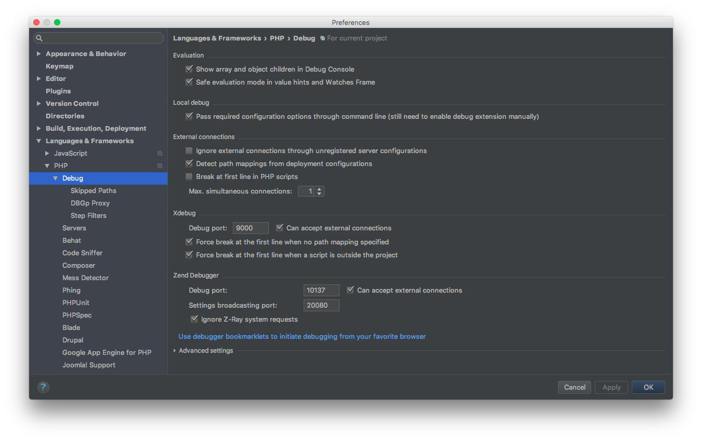
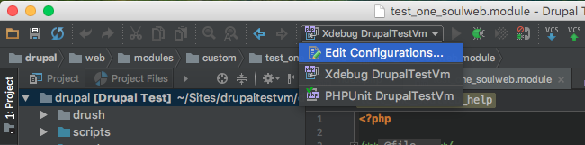
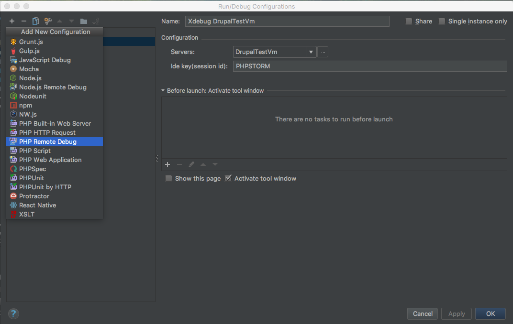
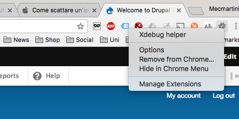
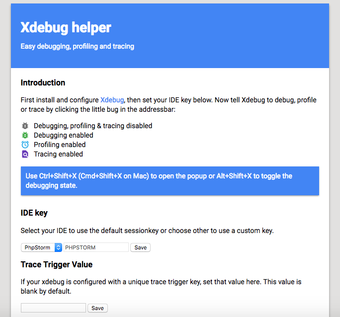
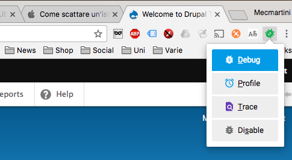
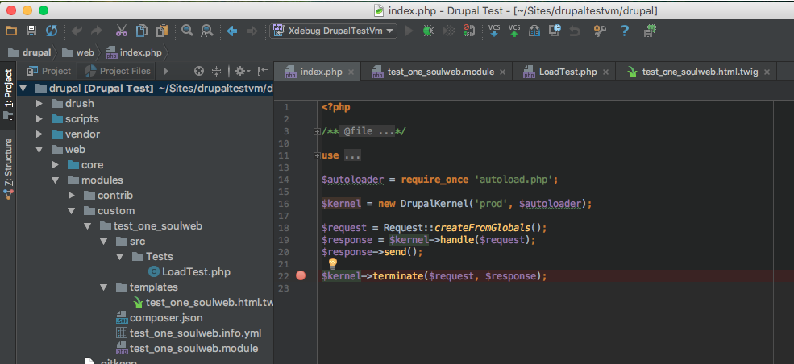
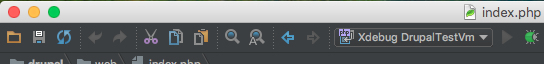
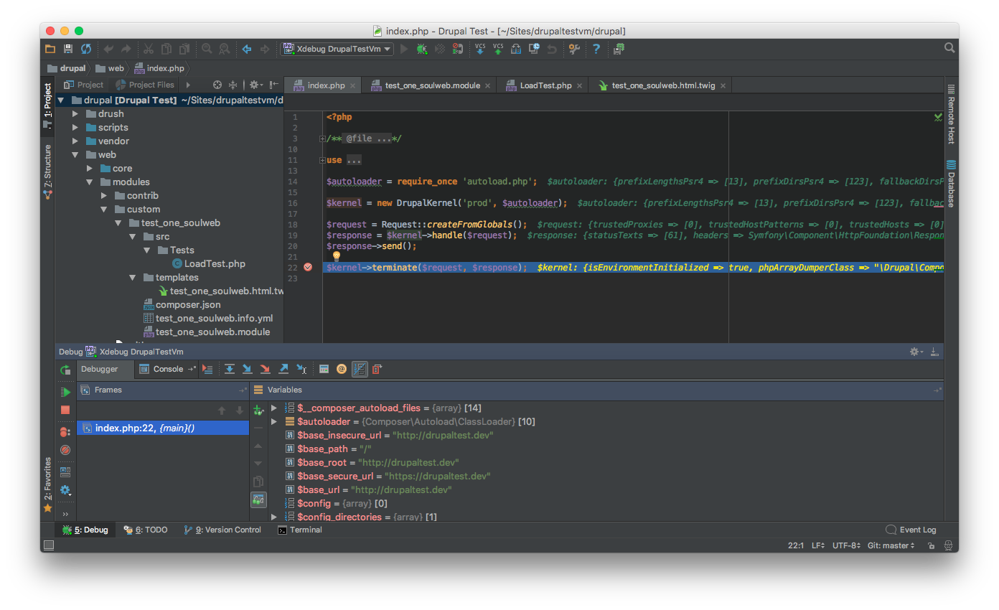

Xdebug¶
1. Enable Xdebug on your Vagrant machine¶
Open the vagrant machine config.yml file and be sure to have the xdebug line uncommented on installed_extras
installed_extras:
- adminer
# - blackfire
- drupalconsole
- drush
# - elasticsearch
# - java
- mailhog
# - memcached
# - newrelic
# - nodejs
- pimpmylog
# - redis
# - ruby
# - selenium
# - solr
# - tideways
# - upload-progress
# - varnish
- xdebug
# - xhprof
Be sure to have the following lines set as:
# XDebug configuration. XDebug is disabled by default for better performance. php_xdebug_default_enable: 1 php_xdebug_coverage_enable: 1
Add the port 9000 to firewall_allowed_tcp_ports
firewall_allowed_tcp_ports: - "22" - "25" - "80" - "81" - "443" - "4444" - "8000" - "8025" - "8080" - "8443" - "8983" - "9000" - "9200"
From your terminal go on the vagrant directory and run vagrant up --provision, to apply the changes on your vagrant machine, or run vagrant provision if your machine is already up.
2. Integrate Xdebug in PhpStorm¶
On PhpStorm go to settings.
Be sure to have Xdebug -> Debug port set to 9000:

From PhpStorm click on Edit Configurations…:

Click on + button and select PHP Remote Debug:

Select you Server (see Add GitHub repository and Initial Commit) and set Ide key to PHPSTORM.
Install Xdebug helper as Chrome extension (also available on Firefox)
Note
similar extensions are available also for Firefox (e.g. theeasiestxdebug).
A new icon should appear on Chrome. Right click on it and select Options.

Select PhpStorm on IDE key and save it

Click on Xdebug helper icon and select Debug

Now you should be ready to debug. Set a breakpoint on your Drupal index.php clicking on the right of the code row number. A red point must appear.

To start to debug click on the bug icon

Then navigate on your Drupal installation from the browser and you will see the debugger in action

To continue the execution of Drupal after the breakpoint click on Resume Program (play button on the left of Debugger tab).
To stop the debugger click on Stop (stop button on the left of Debugger tab).